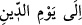
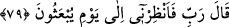
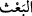
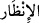
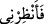

(__WORD__) yâni “cezâ gününe kadar” ifâdesi lânetin dünyada olup bittiğini gösterir.
Ama bu vakit tayininden onun âhirette lânetlenmeyeceği anlamı çıkmaz. Çünkü dünyada
iken rahmet râyihalarını koklayamayarak bir süre de olsa lânetlenen bir varlık âhirette
de ebediyyen lânetli (mel’ûn) olur. Ayrıca orası kâfirlere rahmet etme yeri olmadığı için
rahmetin eserini bile göremez. Kaldı ki İblis’in sürekli ateşte kalacağı ve “O zaman
aralarında bir nâdî, “Allah’ın lâneti zâlimlere!” diye seslenir” (el-A’râf 7/44)
âyetinin gösterdiği üzere lânetleneceği de nass ile sâbittir. Allah korusun, yanında
lânetin bile unutulacağı bir başka azâbı da gözardı etmemek gerekir.
Bir âlim der ki: İblis’in kovulması kendini beğenip (ucûb) hep kendine bakması
yüzündendir. Böylece İblis’ten sonra “ben ondan daha hayırlıyım” iddiâsında
bulunacak herkesin, bundan ibret alması istenmiş olmaktadır.
Şöyle bir açıklama daha yapılmıştır: İblis’in kovulup yüzüstü bırakılması, gerek
melekleri gerekse Âdemoğullarını tehdîd etmeğe yöneliktir. Böylece onların da bu
durumdan ibret alıp Allah’ın râzı olmadığı şeylerden çekinip uzak durmaları istenmiştir.
Bu benliği (kibri) Allah için sarfeyle,
Tâ ki o İblîs gibi Hak’tan uzak kalmayasın,
Onun kahhârlığının çarpmasından sakın,
Onun bağışlaması tarafına doğru git,
Ey arkada kalan! Öndekilerden ibret al,
Tâ ki kahır ve teleften kurtulasın.
Bütün bunlardan korunup başarıya ulaşmak yalnızca Allah sâyesinde mümkündür.
79. İblis: Ey Rabbim! O halde tekrar diriltilecekleri güne kadar bana mühlet ver,
dedi.
“İblis: Ey Rabbim!” Ey yaratıcım! “O halde” Âdem ve zürriyyetinin cezâ için
kabirlerinden “tekrar diriltilecekleri güne” yâni kıyamet gününe “kadar bana” izin ve
“mühlet ver, dedi.”
(__WORD__) kelimesi, ölüyü diriltmek demektir.
(__WORD__), mühlet vermek ve geciktirmek demektir. (__WORD__)’deki (__WORD__), fâ-i fasîha
(açıklama fâ’sı) olup “mademki beni kovdun; bâri beni öldürme de bana bir süre tanı”
demektir. Bu duâsı ile İblis, Âdem ve oğullarını azdırıp onlardan öcünü alma ve
ölümden tamamen kurtulmayı hedeflemiştir. Çünkü yeniden dirilme gününden sonra bir
daha ölmek yoktur. Fakat bu isteği reddedilmiş ve murâdına kavuşamamıştır.